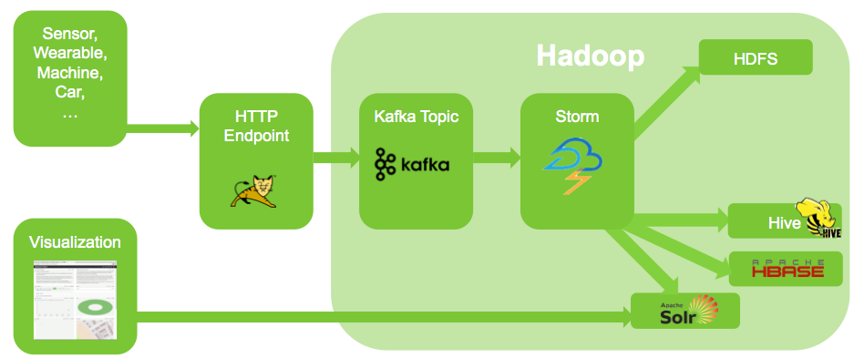
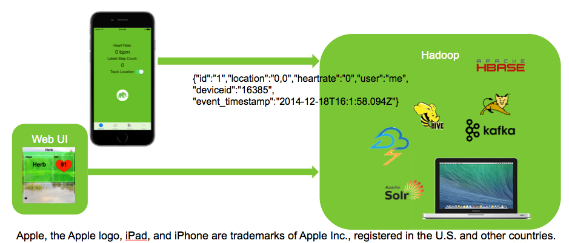

This is a tutorial and an example of an internet of things (IoT) and real-time streaming application. The typical architectue of such an application looks like this:

To make things more interesting we are going to use real data! This actually is the reason for this app: Your phone is the sensor we are going to use. The server-side will run on your Mac Book! For detailed instructions to set Hadoop up on your Mac please see the instructions on the bar called "More" below. Don't be worried your data is not going to end up anywhere you do not want it to be. The application will only send the data to a server you specify on the bar labeled "Hadoop". Here you point the app to the Hadoop installation on your Mac like: "http://127.0.0.1:8181". For more details on privacy please check-out the bar labeled "More".
So let's get started: The app is going to collect heart-rate, step and location data and will send it to the server side on your Mac. Here's an illustration:

The data collected from the sensor (e.g. your phone) is send to the server via json over http. A stateless http-endpoint (Apache Tomcat in this case) collects the message and forwards it to an Apache Kafka broker from there a Apache Storm topology reads it, transforms and stores it. During this process the message also gets indexed by Apache Solr therefore we can search it and visualize it with Banana. That surely is very cool: We can store and process incoming data from an endless number of sensors. The backend being Hadoop-based will scale horizontally and we do not have a single component in our architecture which would block this.
But we want to do even more! Let's add some machine learning (ml) to the picture. To be clear this will be only a kind of "Hello World" of ml. What we want to have is a (very) simple model which tells us in real-time that our heart-rate is too high. For this excersise get some of your collected data from HDFS on your Mac (hadoop fs -get /user/guest/hdpdemostudio/hr/...) and examine the data. We are going to use only some of the columns for this id and heart-rate. A good exercise would be to use Apache pig to load and transform the data until you have something like this:
HR, id
102, Me
120, Someoneelse
160, Me
165, Me
...
In our case we want our model to be a simple decision tree which falls into the category of supervised learning. So let's supervise the data. When the heart-rate seems to high we want our widget showing the heart-rate to turn read otherwise it should be green:
WidgetColor HR User
0x00FF00 102 Me
0x00FF00 120 Someoneelse
0xFF0000 160 Me
0xFF0000 165 Me
...
If you have a lot of data an Apache Pig script or a map/reduce job is a good way to do this. This indeed is a typical use-case of Hadoop in ml: You use Hadoop to collect, clean and transform the data. The model itself quite often is created outside of Hadoop but then finally again deployed into Hadoop.
But back to our data. Bring up R or SAS Miner or what have you. We are going use R here but it really does not matter as long as it can export PMML (Predictive Model Markup Language).
Run the follwing R program and it will create your model based on your supoervised data:
library(rpart)
install.packages("pmml")
require(pmml)
hrdata= read.table(file.choose(), header=TRUE, sep="\t")
model <- rpart(WidgetColor ~ HR, data=hrdata)
saveXML(pmml(model, model.name = "Model",
app.name = "R/PMML", dataset = hrdata), file = "hrmodel.pmml")
The Storm topology deployed within Horton's Gym has a PMML-Bolt built-in and will evaluate your model every time a message is received.
Now that's pretty awesome, isn't it? We can collect sensor data and anaylse it in real-time which opens vast possibilties for pre-active maintenance of field equipment, intelligent connected cars and many many more interesting use-case.
Have fun experimenting with this! For details on how to upload your model look at the tutorial for your Mac.
By the way this is all 100% open source: I'm using HDP from Hortonworks and you can find the other parts on GitHub:
https://github.com/digitalemil/HDPDemoStudio.git
https://github.com/digitalemil/HortonsGym.git
https://github.com/digitalemil/HortonsGym-iOS.git
Happy hacking!